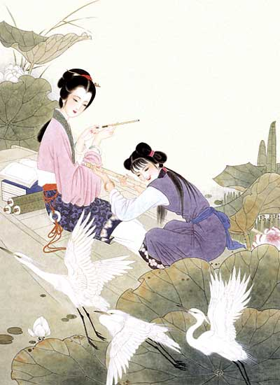

千古相思（中国古典爱情诗词鉴赏）
http://www.tynews.com.cn/images/2005-11/02/xin_4911020216274532620221.jpg
关雎 <<诗经>>
关关雎鸠，在河之洲。窈窕淑女，君子好逑。
参差荇菜，左右流之。窈窕淑女，寤寐求之。
求之不得，寤寐思服。悠哉悠哉，辗转反侧。
参差荇菜，左右采之。窈窕淑女，琴瑟友之。
参差荇菜，左右芼之。窈窕淑女，钟鼓乐之。
凤求凰·琴歌 佚名
有美人兮， 见之不忘。一日不见兮，思之如狂。
凤飞翱翔兮，四海求凰。无奈佳人兮，不在东墙。
将琴代语兮，聊写衷肠。何日见许兮，慰我徬徨。
愿言配德兮，携手相将。不得於飞兮，使我沦亡。
http://www.tynews.com.cn/images/2005-11/02/xin_4711020216277812263817.jpg
钗头凤 陆游
红酥手，黄藤酒，满城春色宫墙柳。
东风恶，欢情薄，一杯愁绪，几年离索。
错！错！错！
春如旧，人空瘦，泪痕红悒鲛绡透。
桃花落，闲池阁，山盟虽在，锦书难托。
莫，莫，莫！
钗头凤 唐婉
世情薄，人情恶，雨送黄昏花易落。
晓风干，泪痕残，欲笺心事，独语斜阑。
难！难！难！
人成各，今非昨，病魂常似秋千索。
角声寒，夜阑珊，怕人寻问，咽泪装欢。
瞒，瞒，瞒！
http://www.tynews.com.cn/images/2005-11/02/xin_481102021627203782218.jpg
相思 王维
红豆生南国，春来发几枝？
愿君多采撷，此物最相思。
秋风词 李白
秋风清，秋月明，落叶聚还散，寒鸦栖复惊。
相亲相见知何日，此时此夜难为情；
入我相思门，知我相思苦，
长相思兮长相忆，短相思兮无穷极，
早知如此绊人心，何如当初莫相识。
http://www.tynews.com.cn/images/2005-11/02/xin_5011020216272962341323.jpg
竹枝词 刘禹锡
杨柳青青江水平，闻郎江上唱歌声。
东边日出西边雨，道是无晴却有晴。
竹枝词 刘禹锡
山桃红花满上头，蜀江春水拍山流。
花红易衰似郎意，水流无限似侬愁。
http://www.tynews.com.cn/images/2005-11/02/xin_501102021627718518824.jpg
燕子楼 张仲素
楼上残灯伴晓霜,独眠人起合欢床。
相思一夜情多少?地角天涯不是长。
锦瑟 李商隐
锦瑟无端五十弦，一弦一柱思华年，
庄生晓梦迷蝴蝶，望帝春心托杜鹃。
沧海月明珠有泪,蓝田日暖玉生烟，
此情可待成追忆,只是当时已惘然。
http://www.tynews.com.cn/images/2005-11/02/xin_461102021627906238015.jpg
无题 李商隐
相见时难别亦难，东风无力百花残。
春蚕到死丝方尽，蜡炬成灰泪始干。
晓镜但愁云鬓改，夜吟应觉月光寒。
蓬山此去无多路，青鸟殷勤为探看。
江 城 子 苏东坡
十年生死两茫茫，不思量，自难忘。
千里孤坟，无处话凄凉。
纵使相逢应不识，尘满面，鬓如霜。
夜来幽梦忽还乡，小轩窗，正梳妆。
相顾无言，惟有泪千行。
料得年年肠断处，明月夜，短松冈。
http://www.tynews.com.cn/images/2005-11/02/xin_4711020216273592352216.jpg
夜雨寄北 李商隐
君问归期未有期，巴山夜雨涨秋池。
何当共剪西窗烛，却话巴山夜雨时。
赠别 杜牧
多情却似总无情，唯觉樽前笑不成。
蜡烛有心还惜别，替人垂泪到天明。
http://www.tynews.com.cn/images/2005-11/02/xin_4611020216270461607013.jpg
长相思 白居易
汴水流，泗水流，
流到瓜洲古渡头，吴山点点愁。
思悠悠，恨悠悠，
恨到归时方始休，月明人倚楼。
长相思 林逋
吴山青，越山青。
两岸青山相送迎。谁知离别情？
君泪盈，妾泪盈。
罗带同心结未成。江头潮已平。
http://www.tynews.com.cn/images/2005-11/02/xin_4611020216274681721714.jpg
相见欢 李煜
无言独上西楼，月如钩。
寂寞梧桐深院锁清秋。
剪不断，理还乱，是离愁。
别是一般滋味在心头。
鹊桥仙 秦观
纤云弄巧，飞星传恨，
银汉迢迢暗度。
金风玉露一相逢，便胜却、人间无数。
柔情似水，佳期如梦，
忍顾鹊桥归路。
两情若是久长时，又岂在、朝朝暮暮。

http://www.tynews.com.cn/images/2005-11/02/xin_481102021627625379319.jpg
虞美人 秦观
碧桃天上栽和露，不是凡花数，
乱山深处水荥迥，借问一枝如玉为谁开？
轻寒细雨情何限，不道春难管，
为君沉醉又何妨？只怕酒醒时候断人肠！
蝶恋花 晏殊
槛菊愁烟兰泣露，罗幕轻寒，燕子双飞去。
明月不谙离恨苦，斜光到晓穿朱户。
昨夜西风凋碧树，独上高楼,望尽天涯路。
欲寄彩笺无尺素，山长水远知何处。
http://www.tynews.com.cn/images/2005-11/02/xin_4911020216278752259822.jpg
青玉案 元夕 辛弃疾
东风夜放花千树，更吹落、星如雨。
宝马雕车香满路。
凤箫声动，玉壶光转，一夜鱼龙舞。
蛾儿雪柳黄金缕，笑语盈盈暗香去。
众里寻他千百度。蓦然回首，那人却在，
灯火阑珊处。
最高楼 程垓
旧时心事，说著两眉羞。
长记得、凭肩游。
缃裙罗袜桃花岸，薄衫轻扇杏花楼。
几番行，几番醉，几番留。
也谁料、春风吹已断。
又谁料、朝云飞亦散。
天易老，恨难酬。
蜂儿不解知人苦，燕儿不解说人愁。
旧情怀，消不尽，几时休。
http://www.tynews.com.cn/images/2005-11/02/xin_4911020216270312158820.jpg
蝶恋花 纳兰性德
辛苦最怜天上月， 一夕如环， 夕夕都成玦。
若似月轮终皎洁， 不辞冰雪为卿热。
无那尘缘容易绝， 燕子依然， 软踏帘钩说。
唱罢秋坟愁未歇， 春丛认取双栖蝶。
上邪 汉乐府
上邪! 我欲与君相知，
长命无绝衰。
山无陵，江水为竭，冬雷震震，
夏雨雪，天地合，乃敢与君绝！

http://www.nihaoblog.com/uploadfiles/118/20050324/05.jpg
一剪梅 李清照
红藕香残玉簟秋。
轻解罗裳，独上兰舟。
云中谁寄锦书来？
雁字回时，月满西楼。
花自飘零水自流，
一种相思，两处闲愁。
此情无计可消除，
才下眉头，却上心头。
醉花阴 李清照
薄雾浓云愁永昼，瑞脑消金兽。
佳节又重阳，玉枕纱橱，半夜凉初透。
东篱把酒黄昏後，有暗香盈袖。
莫道不消魂，帘卷西风，人比黄花瘦。

http://www.nihaoblog.com/uploadfiles/118/20050324/08.jpg
卜算子 李之仪
我住长江头，君住长江尾。日日思君不见君，
共饮长江水。此水几时休，此恨何时已。
只愿君心似我心，定不负相思意。
乌夜啼 李煜
林花谢了春红，太匆匆，
无奈朝来寒雨晚来风。
胭脂泪， 相留醉， 几时重，
自是人生长恨水长东。

http://www.nihaoblog.com/uploadfiles/118/20050324/06.jpg
题都城南庄 崔护
去年今日此门中，人面桃花相映红。
人面不知何处去，桃花依旧笑春风。
赠别 杜牧
多情却似总无情，唯觉樽前笑不成。
蜡烛有心还惜别，替人垂泪到天明。